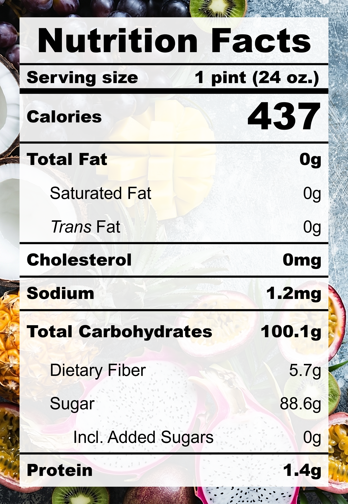

| Taste | Macros | Ease |
|---|---|---|
| ★★★☆☆ | ★☆☆☆☆ | ★★★★★ |
Recipe
Ingredients for a 24-oz pint:
- Mango juice (275 ml)
- Pineapple, frozen (400 g)
Instructions:
- Pour ingredients into the pint, make sure the mango juice covers the pineapples and the total volume stays under the max-fill line
- Freeze for 24 hours.
- Spin on SORBET (push down and re-spin if needed).
Nutrition Facts

Reflections
Overall Rating: ★★★☆☆
The summer solstice ☀️ inspired me to make a pint using only ✨fruit✨. Super simple ingredients, natural sugars, zero fat, and very refreshing! The taste was definitely fruity but a bit flat.
The Good (what went well):
- The CREAMi injects air: I was worried that the texture would be too slushy since the frozen pint looked like a solid block of ice. However, the final texture was creamy and fluffy.
- Super easy recipe: Only two ingredients and no blending!
The Bad (lessons learned):
- The flavour was a bit flat: Honestly, this one is a bit of a stretch. Real fruits can only do so much. Next time, add in mango chunks for a more intense flavour and reduce the juice volume.